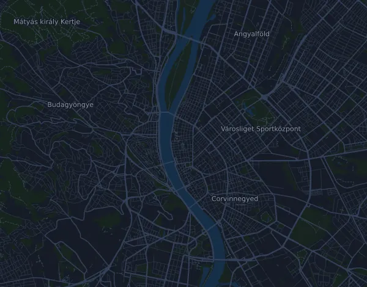

SPAR Budapest Marathon – 42,2 km
- Distance
- 42.2 km
- Elevation gain
- ↑ 645 m
- Highest point
- 164 m a.s.l.
- Surface
- Road
- Profile
- Hilly
- Aid stations
- 12
Elevation profile
Prepare with Mila
Mila is a running coach app. Add a race to your plan and the coach plans your weeks up to race day around your form, and gives you a finish-time forecast and a plan for pacing, drinks and fuel on the course.

The right run, on the right day.
The course

About the course
SPAR Budapest Marathon – 42,2 km is a road race in Budapest, Hungary, over 42.2 km. The course climbs 645 m and descends 644 m in total, 15 m per km, which makes it hilly. The highest point is 164 m above sea level and the lowest 96 m.
The biggest climb starts at km 4.0: 52 m of ascent over 890 m at 5.8 % on average, up to 164 m.
The organizer lists 12 aid stations, the first at km 4.1 and the last at km 40.9.
In the Mila app, the coach describes the course in detail in your language and plans your pacing and fueling for it.
Climbs
| Starts at | Length | Gain | Gradient | Top (m above sea level) |
|---|---|---|---|---|
| km 4.0 | 890 m | 52 m | 5.8 % | 164 |
Before the start
Aid stations
| At | What's there |
|---|---|
| km 4.1 | water |
| km 7.8 | water, sports drink, food |
| km 11.3 | water, sports drink, food, salt |
| km 14.5 | water, sports drink, food |
| km 18.6 | water, sports drink, food |
| km 22.7 | water, sports drink, food, salt |
| km 24.1 | water |
| km 28.3 | water, sports drink, food |
| km 31.8 | water, sports drink, food, salt |
| km 34.9 | water, sports drink, food |
| km 39.3 | water, sports drink, food |
| km 40.9 | water |
Source: marathon.runinbudapest.com, retrieved 15 October 2026
Pace table
SPAR Budapest Marathon – 42,2 km in 3:00:00 – pace per km and splits
4:16 per km · km 10: 42:39 · km 21.1: 1:30:00 · km 30: 2:07:58 · km 40: 2:50:37 · finish: 3:00:00
SPAR Budapest Marathon – 42,2 km in 3:30:00 – pace per km and splits
4:59 per km · km 10: 49:46 · km 21.1: 1:45:00 · km 30: 2:29:17 · km 40: 3:19:03 · finish: 3:30:00
SPAR Budapest Marathon – 42,2 km in 4:00:00 – pace per km and splits
5:41 per km · km 10: 56:52 · km 21.1: 2:00:00 · km 30: 2:50:37 · km 40: 3:47:29 · finish: 4:00:00
SPAR Budapest Marathon – 42,2 km in 4:30:00 – pace per km and splits
6:24 per km · km 10: 1:03:59 · km 21.1: 2:15:00 · km 30: 3:11:57 · km 40: 4:15:55 · finish: 4:30:00
The times assume an even pace the whole way. This is plain arithmetic, not a forecast: on climbs, in crowds and at aid stations the pace varies.
Frequently asked questions
When is SPAR Budapest Marathon – 42,2 km?
The date of the next edition is not set yet. The race was last held on 11 October 2026.
How long is SPAR Budapest Marathon – 42,2 km and how much climbing is there?
The race is 42.2 km with 645 m of climbing and 644 m of descent. The highest point is 164 m above sea level.
What is the course of SPAR Budapest Marathon – 42,2 km like?
The course is hilly, with 15 m of climbing per km on average. It has one climb of at least 25 m, at km 4.0: 52 m over 890 m. Start and finish are in the same place. The surface is road.
Are there aid stations at SPAR Budapest Marathon – 42,2 km?
Yes. The organizer lists 12 aid stations: km 4.1 (water); km 7.8 (water, sports drink, food); km 11.3 (water, sports drink, food, salt); km 14.5 (water, sports drink, food); km 18.6 (water, sports drink, food); km 22.7 (water, sports drink, food, salt); km 24.1 (water); km 28.3 (water, sports drink, food); km 31.8 (water, sports drink, food, salt); km 34.9 (water, sports drink, food); km 39.3 (water, sports drink, food); km 40.9 (water).
How should I pace SPAR Budapest Marathon – 42,2 km?
Aim for an even effort rather than an even pace: let the pace drop on the climbs, win it back where it levels out, and hold back in the first kilometres. The biggest climbs start at km 4.0. In Mila you get a pace plan for this course, based on your own form.
More races like this
More races nearby
- Wizz Air Budapest Half Marathon 21 km5 September 2027 · Budapest, Hungary
- 101ª Corrida Internacional de São Silvestre 15 km31 December 2026 · São Paulo, Brazil
- 20 km de Bruxelles30 May 2027 · Bruxelles, Belgium
Prepare with Mila
The right run, on the right day.
Details come from the course file and the organizer's information. Check the date, start times and rules with the organizer.
Mila is not affiliated with, sponsored by or endorsed by the organizer or the race's sponsors. Names and trademarks belong to their owners. Organizer or rights holder? Ask for a change or a removal